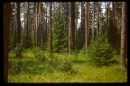
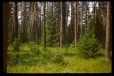

Страницы авторов "Тёмного леса"
Литературный Кисловодск и окрестности
Пишите нам! temnyjles@narod.ru
| N1 | 6.7K | 3 Oct 2019 | TL69.shtml |
| N2 | 7.0K | 20 Mar 2019 | TL70a.shtml |
| N3 | 5.9K | 20 Mar 2019 | TL70b.shtml |
| N4 | 14K | 1 Jul 2019 | TL70c.shtml |
| N5 | 11K | 20 Mar 2019 | TL70d.shtml |
| N6 | 9.0K | 3 Oct 2019 | TL71.shtml |
| N7 | 5.9K | 20 Mar 2019 | TL72a.shtml |
| N8 | 12K | 1 Jul 2019 | TL72b.shtml |
| N9 | 9.3K | 1 Jul 2019 | TL72c.shtml |
| N10 | 13K | 20 Mar 2019 | TL73a.shtml |
| N11 | 6.9K | 1 Jul 2019 | TL73b.shtml |
| N12 | 12K | 1 Jul 2019 | TL74a.shtml |
| N13 | 4.8K | 1 Jul 2019 | TL74b.shtml |
| N14 | 9.7K | 1 Jul 2019 | TL74c.shtml |
| N15 | 9.4K | 1 Jul 2019 | TL75a.shtml |
| N16 | 12K | 1 Jul 2019 | TL75b.shtml |
| N17 | 12K | 1 Jul 2019 | TL76a.shtml |
| N18 | 14K | 20 Mar 2019 | TL76b.shtml |
| N19 | 7.0K | 3 Oct 2019 | TL77.shtml |
| N20 | 13K | 3 Oct 2019 | TL78.shtml |
| N21 | 10K | 20 Mar 2019 | TL79a.shtml |
| N22 | 22K | 1 Jul 2019 | TL79b.shtml |
| N23 | 12K | 1 Jul 2019 | TL79c.shtml |
| N24 | 17K | 1 Jul 2019 | TL79d.shtml |
| N25 (1-й вариант) | 14K | 3 Oct 2019 | TL80-1.shtml |
| N25 (2-й вариант) | 7.2K | 3 Oct 2019 | TL80-2.shtml |
| n26 | 16K | 3 Oct 2019 | TL83.shtml |
| N27 | 20K | 3 Oct 2019 | TL82.shtml |
| N30 | 8.9K | 3 Oct 2019 | TL86.shtml |
| N31 | 15K | 3 Oct 2019 | TL88.shtml |
| N32 | 30K | 20 Mar 2019 | TL89a.shtml |
| N33 | 45K | 20 Mar 2019 | TL89b.shtml |
| N34 | 23K | 3 Oct 2019 | TL90.shtml |
| N35 | 30K | 3 Oct 2019 | TL91.shtml |
| N36 | 19K | 3 Oct 2019 | TL92.shtml |
| N37 | 12K | 3 Oct 2019 | TL93.shtml |
| N38 | 12K | 3 Oct 2019 | TL94.shtml |
| N39 | 7.4K | 3 Oct 2019 | TL95.shtml |
| N40 | 15K | 3 Oct 2019 | TL96.shtml |
| N41 | 22K | 3 Oct 2019 | TL97.shtml |
| N42 | 16K | 3 Oct 2019 | TL98.shtml |
| N43 | 32K | 3 Oct 2019 | TL99.shtml |
| N44 | 14K | 30 Sep 2019 | TL00.shtml |
| N45 | 14K | 30 Sep 2019 | TL01.shtml |
| N46 | 20K | 30 Sep 2019 | TL02.shtml |
| N47 | 32K | 30 Sep 2019 | TL03.shtml |
| N48 | 19K | 30 Sep 2019 | TL04.shtml |
| N49 | 43K | 30 Sep 2019 | TL05.shtml |
| N50 | 52K | 30 Sep 2019 | TL06.shtml |
| N51 | 30K | 30 Sep 2019 | TL07.shtml |
| N52 | 44K | 30 Sep 2019 | TL08.shtml |
| N53 | 17K | 30 Sep 2019 | TL09.shtml |
| N54 | 36K | 30 Sep 2019 | TL10.shtml |
| N55 | 32K | 30 Sep 2019 | TL11.shtml |
| N56 | 30K | 30 Sep 2019 | TL12.shtml |
| N57 | 26K | 30 Sep 2019 | TL13.shtml |
| N58 | 24K | 30 Sep 2019 | TL15.shtml |
| N59 | 24K | 20 Mar 2019 | TL17a.shtml |
| N60 | 14K | 20 Mar 2019 | TL17b.shtml |
| N61 | 12K | 20 Mar 2019 | TL18a.shtml |
| N62 | 10K | 21 Mar 2019 | TL18b.shtml |
| N63 | 92K | 3 Oct 2019 | TL19.shtml |
| N64 | 54K | 31 Jan 2020 | TL20.shtml |
| N65 | 24K | 15 Mar 2021 | TL21a.shtml |
| N66 | 50K | 1 Jan 2022 | TL21b.shtml |
| N67 | 19K | 31 Jan 2023 | TL23.shtml |
| Стихи школьных лет | 94K | 12 Aug 2018 | st-8-10.shtml |
| Лафанские стихи и проза | 54K | 12 Aug 2018 | st-lafan.shtml |
| Стихи студенческих лет | 63K | 12 Aug 2018 | st-inst.shtml |
| Стихи уральских лет | 78K | 12 Aug 2018 | st-ural.shtml |
| Стихи послеуральских лет | 49K | 12 Aug 2018 | st-p-ur.shtml |
| Случайные строки | 40K | 12 Aug 2018 | sluch.shtml |
| XXI век | 27K | 12 Aug 2018 | st-XXI.shtml |
| Избранное (составитель Ольга Таллер) | 194K | 12 Aug 2018 | Nasim1.shtml |
| Звонок (поэма 1969 г.) | 10K | 12 Aug 2018 | zvonok.shtml |
| К. Макушинский. Три книги приключений козлика Матолэка (перевод с польского Ю.Насимовича) | 44K | 12 Aug 2018 | st-Matol.shtml |
| Стихи о грибах | 35K | 8 Oct 2018 | gribi-kn.shtml |
| Стихи о деревьях | 12K | 8 Oct 2018 | rasr-kr.shtml |
| Стихи о кустах | 8.0K | 8 Oct 2018 | rasr-kr1.shtml |
| Стихи о травах | 23K | 8 Oct 2018 | rasr-kr2.shtml |
| Азбука | 31K | 8 Oct 2018 | azb-poln.shtml |
| Виктор Мазинг. Ты только посмотри... (перевод Ю.Насимовича) | 15K | 21 Mar 2020 | Mazing.shtml |
| Появление и развитие жизни на Земле | 43K | 10 Oct 2018 | d3-01.shtml |
| Человеческое общество | 39K | 10 Oct 2018 | d3-02.shtml |
| Психология, эстетика | 33K | 10 Oct 2018 | d3-03.shtml |
| Этика | 13K | 10 Oct 2018 | d3-04.shtml |
| Иерархическая модель Вселенной и мистика | 16K | 10 Oct 2018 | d3-05.shtml |
| Необъяснённые явления психики | 4.5K | 10 Oct 2018 | d3-06.shtml |
| Полтергейст | 7.0K | 10 Oct 2018 | d3-07.shtml |
| Миф о Туринской плащанице | 4.9K | 10 Oct 2018 | d3-08.shtml |
| Астрология | 7.0K | 10 Oct 2018 | d3-09.shtml |
| Жизнь и смерть | 68K | 10 Oct 2018 | d3-10.shtml |
| Проблема инопланетян | 4.8K | 10 Oct 2018 | d3-11.shtml |
| Природа в окрестностях Николиной Горы | 68K | 21 Sep 2018 | Nik-Gora.shtml |
| Природа в окрестностях Ильинского и Усова | 30K | 21 Sep 2018 | Usovo-Il.shtml |
| Природа окрестностей Архангельского | 31K | 21 Sep 2018 | Arhangel.shtml |
| Природа окрестностей Середникова | 58K | 21 Sep 2018 | Serednik.shtml |
| Природа в окрестностях Акатова, Мешкова и Валуева | 29K | 21 Sep 2018 | Valuevo.shtml |
| Фотографии Мозжинских гор (33 шт.) | 4.1K | 21 Sep 2018 | Moz.shtml |
| Введение | 6.5K | 15 Oct 2018 | reki0.shtml |
| 1.1. Реки, ручьи, овраги... | 6.6K | 15 Oct 2018 | reki1-01.shtml |
| 1.2. Родники | 3.5K | 15 Oct 2018 | reki1-02.shtml |
| 1.3. Озёра, пруды, водохранилища... | 7.5K | 15 Oct 2018 | reki1-03.shtml |
| 1.4. Болота | 8.8K | 15 Oct 2018 | reki1-04.shtml |
| 1.5. Геологические обнажения вдоль рек | 8.1K | 15 Oct 2018 | reki1-05.shtml |
| 1.6. Приречные деревья и кустарники | 6.4K | 15 Oct 2018 | reki1-06.shtml |
| 1.7. Водоплавающие и околоводные птицы | 6.6K | 15 Oct 2018 | reki1-07.shtml |
| 1.8. Рыбы | 5.0K | 15 Oct 2018 | reki1-08.shtml |
| 1.9. Археологические памятники вдоль рек | 6.2K | 15 Oct 2018 | reki1-09.shtml |
| 1.10. Как изучались малые реки Москвы | 5.8K | 15 Oct 2018 | reki1-10.shtml |
| 2.1. Несколько слов о реке Москве | 6.7K | 15 Oct 2018 | reki2-01.shtml |
| 2.2. Сохранилась ли речка Филька? | 8.1K | 15 Oct 2018 | reki2-02.shtml |
| 2.3. Алешинка, Натошенка, Кипятка... | 6.9K | 15 Oct 2018 | reki2-03.shtml |
| 2.4. Раменки без рамени | 8.1K | 15 Oct 2018 | reki2-04.shtml |
| 2.5. Прощание с Чурой? | 7.4K | 15 Oct 2018 | reki2-05.shtml |
| 2.6. Нужна ли городу речка Жужа? | 7.9K | 15 Oct 2018 | reki2-06.shtml |
| 2.7. Почему Кремль не построили в Тушине? | 7.1K | 15 Oct 2018 | reki2-07.shtml |
| 2.8. Шире, чем река Москва | 7.6K | 15 Oct 2018 | reki2-08.shtml |
| 2.9. Две Неглинки - натуральная и водопроводная | 7.0K | 15 Oct 2018 | reki2-09.shtml |
| 2.10. Речка Лихого бора | 8.3K | 15 Oct 2018 | reki2-10.shtml |
| 2.11. Дочка Лосиного Острова | 6.8K | 15 Oct 2018 | reki2-11.shtml |
| 2.12. Речка с улицы Вешних вод | 6.1K | 15 Oct 2018 | reki2-12.shtml |
| 2.13. Серебристая ленточка Измайлова | 7.2K | 15 Oct 2018 | reki2-13.shtml |
| 3.1. Сокращения названий литературных и картографических источников | 4.2K | 15 Oct 2018 | reki3-01.shtml |
| 3.2 Прочие сокращения | 2.6K | 15 Oct 2018 | reki3-02.shtml |
| 3.3. Река Москва и отдельные участки её водной поверхности | 49K | 15 Oct 2018 | reki3-03.shtml |
| 3.19. Бассейн Пахры в Толстопальцеве и Внукове (притоки Незнайки) | 8.8K | 15 Oct 2018 | reki3-19.shtml |
| 3.20. Бассейн Пахры на юге Москвы (кроме бассейна Битцы) (в основном, Южное Бутово) | 45K | 15 Oct 2018 | reki3-20.shtml |
| 3.21. Бассейн Битцы (в т.ч. Сев. Бутово) | 59K | 15 Oct 2018 | reki3-21.shtml |
| 3.22. Бассейн левых притоков р.Москвы в Митине | 15K | 15 Oct 2018 | reki3-22.shtml |
| 3.23. Река Сходня | 20K | 15 Oct 2018 | reki3-23.shtml |
| 3.24. Бассейн Сходни в Зеленограде (кроме бассейна Горетовки) | 47K | 15 Oct 2018 | reki3-24.shtml |
| 3.25. Бассейн Горетовки в Зеленограде | 38K | 15 Oct 2018 | reki3-25.shtml |
| 3.26. Бассейн Сходни в Северном и Северо-Западном округах | 30K | 15 Oct 2018 | reki3-26.shtml |
| 3.27. Бассейн Химки (в т.ч. Химкинское водохранилище) | 25K | 15 Oct 2018 | reki3-27.shtml |
| 3.28. Бассейны левых притоков р.Москвы, впадающих на участке от устья Химки до устья Ходынки | 14K | 15 Oct 2018 | reki3-28.shtml |
| 3.29. Бассейн Ходынки | 6.9K | 15 Oct 2018 | reki3-29.shtml |
| 3.30. Бассейн Ермаковского ручья и Студенца | 8.6K | 15 Oct 2018 | reki3-30.shtml |
| 3.31. Бассейн Пресни | 14K | 15 Oct 2018 | reki3-31.shtml |
| 3.32. Бассейны левых притоков р.Москвы, впадающих на участке от устья Пресни до устья Неглинной (Черторый и др.) | 11K | 15 Oct 2018 | reki3-32.shtml |
| 3.33. Бассейны Неглинной, Сорочки и Рачки | 23K | 15 Oct 2018 | reki3-33.shtml |
| 3.34. Река Яуза | 14K | 27 Apr 2020 | reki3-34.shtml |
| 3.35. Бассейны правых притоков Яузы, впадающих на участке от МКАД до устья Лихоборки (в т.ч. Чермянка) | 28K | 15 Oct 2018 | reki3-35.shtml |
| 3.36. Бассейн Лихоборки | 50K | 15 Oct 2018 | reki3-36.shtml |
| 3.37. Бассейны правых притоков Яузы, впадающих ниже устья Лихоборки (в т.ч. ручьи Сокольников) | 38K | 15 Oct 2018 | reki3-37.shtml |
| 3.38. Бассейны левых притоков Яузы, впадающих на участке от МКАД до устья Хапиловки (в т.ч. Ичка и Будайка в Лосином Острове) | 37K | 15 Oct 2018 | reki3-38.shtml |
| 3.39. Бассейн Сосенки и Хапиловки (кроме бассейна Серебрянки) | 11K | 15 Oct 2018 | reki3-39.shtml |
| 3.40. Бассейн Серебрянки (Измайлово и окрестности) | 41K | 15 Oct 2018 | reki3-40.shtml |
| 3.41. Бассейны левых притоков Яузы, впадающих ниже устья Хапиловки (в т.ч. Синичка, Лефортовские пруды, Золотой Рожок) | 13K | 15 Oct 2018 | reki3-41.shtml |
| 3.42. Бассейны левых притоков р.Москвы, впадающих на участке от устья Яузы до устья Нищенки | 11K | 15 Oct 2018 | reki3-42.shtml |
| 3.43. Бассейн Нищенки (кроме бассейна Пономарки) | 16K | 15 Oct 2018 | reki3-43.shtml |
| 3.44. Бассейн Пономарки (в т.ч. Косинские озёра) | 55K | 16 Aug 2022 | reki3-44.shtml |
| 3.45. Бассейны левых притоков р.Москвы, впадающих на участке от устья Нищенки до устья Пехорки | 30K | 15 Oct 2018 | reki3-45.shtml |
| 3.46. Московская часть бассейна Пехорки (Рудневка и др.) | 19K | 15 Oct 2018 | reki3-46.shtml |
| 3.47. Московская часть бассейна Клязьмы | 28K | 15 Oct 2018 | reki3-47.shtml |
| Часть 4. Обобщающие материалы по водным объектам города | 26K | 15 Oct 2018 | reki4.shtml |
| Литература | 28K | 15 Oct 2018 | reki-lit.shtml |
| Энциклопедия моей жизни | 506K | 20 May 2021 | epizody.shtml |
| Список публикаций Ю.А.Насимовича | 77K | 5 Aug 2020 | sp-publ.shtml |
| Ю.А.Насимович. Энциклопедия моей жизни | 25K | 5 Aug 2020 | encikl.shtml |
| Рассказы друзей и знакомых | 41K | 20 May 2021 | rasskazy.shtml |
| Биография Андрея Александровича Насимовича | 145K | 16 Sep 2020 | biog-AAN.shtml |
| Автобиография Андрея Александровича Насимовича | 42K | 31 Aug 2020 | avto-AAN.shtml |
| Биография Александра Федоровича Насимовича | 93K | 30 Jul 2021 | biog-AFN.shtml |
| О Валентине Дмитриевиче Кушниренко | 19K | 16 Jul 2021 | Kushnir.shtml |
| Изгнанник бродяга Мишка (рассказ) | 15K | 30 Oct 2021 | brodaga.shtml |
| Евгений Кенеман. Необоснованность (сборник стихов) | 130K | 8 Oct 2018 | neobosno.shtml |
| Евгений Кенеман. Иммунитет (пьеса в восьми картинах с прологом и эпилогом) | 62K | 31 Mar 2020 | piessa.shtml |
| Евгений Кенеман. Нелинейный экстраполятор (рассказ) | 22K | 8 Oct 2018 | Ken.shtml |
| Евгений Кенеман. Трубус (рассказ) | 13K | 21 Apr 2020 | trubus.shtml |
| Рисунки Евгения Кенемана (14 шт.) | 1.8K | 8 Oct 2018 | Keneman1.shtml |
| Стихи | 399K | 17 Aug 2022 | Taller.shtml |
| Избранные стихи | 127K | 23 Oct 2018 | izbranoe.shtml |
| венки сонетов | 24K | 1 Dec 2018 | venki.shtml |
| фотографии и рисунки (8 шт.) | 1.5K | 23 Oct 2018 | risunki.shtml |
| Акварели - 1 (17 шт.) | 3.3K | 15 Mar 2021 | akwareli.shtml |
| Акварели - 2 (20 шт.) | 3.4K | 15 Mar 2021 | akvareli.shtml |
| Акварели - 3 (10 шт.) | 2.2K | 15 Mar 2021 | ak.shtml |
| Новые акварели (13 шт.) | 2.1K | 15 Mar 2021 | ak2020.shtml |
| Фотографии Москвы (8 шт.) | 1.6K | 23 Oct 2018 | Moskva.shtml |
| Дом на озере | 21K | 23 Oct 2018 | domnaoz.shtml |
| Мозаика 2011 | 9.5K | 23 Oct 2018 | mozaika.shtml |
| Облики-состояния | 4.9K | 23 Oct 2018 | obliki.shtml |
| Архит | 5.5K | 23 Oct 2018 | arhit.shtml |
| "Всё о сексе" | 655K | 11 Jan 2023 | sex.shtml |
| Отрывки из неоконченного (повесть) | 290K | 30 Apr 2021 | neokonch.shtml |
| экскрементаторы" словесности (Подборка ляпов из средств массовой информации) | 42K | 30 Jun 2022 | lapy.shtml |
| Глория | 26K | 9 Oct 2018 | Gloria.shtml |
| Сказка про овечек | 25K | 9 Oct 2018 | ovcy.shtml |
| Девочка Аня и волк Вова | 94K | 9 Oct 2018 | Vova.shtml |
| Исторический роман | 104K | 9 Oct 2018 | roman.shtml |
| рассказы о Ленине | 7.9K | 9 Oct 2018 | Lenin.shtml |
| Почечуев | 22K | 9 Oct 2018 | Pochechu.shtml |
| Введение в курс | 17K | 9 Oct 2018 | Marks.shtml |
| Легенда о сокращении штатов | 7.9K | 9 Oct 2018 | drevn.shtml |
| С передних рубежей науки | 12K | 9 Oct 2018 | nauka.shtml |
| Измышления | 1.8K | 9 Oct 2018 | ritori.shtml |
| "Не верь, не бойся, не проси" | 9.8K | 9 Oct 2018 | never.shtml |
| Высшая справедливость | 11K | 25 May 2021 | Prostokv.shtml |
| Эскадо | 34K | 9 Oct 2018 | Eskado.shtml |
| Грибы | 1.5K | 9 Oct 2018 | griby.shtml |
| Алексей Голубев. Случай с русалкой | 33K | 30 Jul 2021 | rusalka.shtml |
| Алиса в подземелье | 9.7K | 20 Dec 2021 | Alisa.shtml |
| Вася плюс Таня | 14K | 9 Oct 2018 | VT.shtml |
| Майя | 2.5K | 9 Oct 2018 | maja.shtml |
| Проекты улучшения мира | 16K | 9 Oct 2018 | proekty.shtml |
| Тайны часов и календаря | 5.5K | 9 Oct 2018 | chasy.shtml |
| Экзопланеты | 6.4K | 9 Oct 2018 | ekzo.shtml |
| Всё относительно | 4.5K | 9 Oct 2018 | otnosit.shtml |
| Книга бумажная и книга электронная | 1.3K | 9 Oct 2018 | elkn.shtml |
| Миниатюры | 1.4K | 9 Oct 2018 | mini.shtml |
| Обращение к духоманам | 6.0K | 9 Oct 2022 | duhmanam.shtml |
| Детский сад | 10K | 27 Sep 2021 | detsad.shtml |
| Детский фольклор | 2.1K | 27 Sep 2021 | detsad1.shtml |
| Школьные годы | 8.6K | 27 Sep 2021 | shkola.shtml |
| Студенческие годы | 16K | 27 Sep 2021 | stud.shtml |
| В Кисловодске | 14K | 27 Sep 2021 | Kislovod.shtml |
| Поликлиника | 6.6K | 27 Sep 2021 | plkl.shtml |
| Бег | 7.3K | 27 Sep 2021 | beg.shtml |
| Звезды, галактики, Вселенная | 17K | 27 Sep 2021 | astro.shtml |
| Астрономия, астрофизика | 7.6K | 27 Sep 2021 | zvezdy.shtml |
| Вайнберг. Первые три минуты | 8.9K | 27 Sep 2021 | Wnbrg.shtml |
| Хокинг. Краткая история времени - от Большого взрыва до черных дыр | 1.3K | 27 Sep 2021 | Hoking.shtml |
| Геология | 4.1K | 27 Sep 2021 | geo.shtml |
| Биология | 8.3K | 27 Sep 2021 | bio.shtml |
| Происхождение человека | 5.8K | 27 Sep 2021 | antrop1.shtml |
| Происхождение человека | 8.1K | 27 Sep 2021 | antrop.shtml |
| Происхождение человека (Дольник) | 5.6K | 27 Sep 2021 | Dolnik.shtml |
| Тексты песен | 43K | 8 Oct 2018 | pesni.shtml |
| Другие стихи | 25K | 8 Oct 2018 | drstih.shtml |
| Притча на краю света | 45K | 8 Oct 2018 | pritcha.shtml |
| Песни (39 аудиозаписей в формате mp3) | 2.7K | 8 Oct 2018 | MP3.shtml |
| Проза (6 книг в формате pdf) | 1.0K | 8 Oct 2018 | PDF.shtml |
| Судьба Николая Второго | 21K | 8 Oct 2018 | Nikolaj.shtml |
| "Медный всадник" А.Пушкина | 39K | 8 Oct 2018 | vsadnik.shtml |
| Наша беда | 15K | 8 Oct 2018 | beda.shtml |
| "Фамильный альбом" Татьяны Назаренко | 7.4K | 8 Oct 2018 | Nazarenk.shtml |
| "Жди меня" | 6.1K | 8 Oct 2018 | Simonov.shtml |
| Мой мастер класс | 9.2K | 8 Oct 2018 | klass.shtml |
| Стихи Марии Андреевны Чегодаевой | 47K | 24 Aug 2018 | Chegod.shtml |
| Песни Михаила Чегодаева (20 аудиозаписей в формате mp3) | 2.0K | 7 Aug 2018 | Cheg.shtml |
| Стихи Михаила Чегодаева | 4.7K | 7 Aug 2018 | Cheg-Mih.shtml |
| Стихи Алексея Меллера | 97K | 8 Feb 2020 | Mel-izb.shtml |
| Александр Богданов. В ожидании дня (сборник стихов) | 76K | 7 Aug 2018 | Bogd-izb.shtml |
| Александр Богданов. Подходите к моему костру (сборник стихов) | 91K | 7 Aug 2018 | kostru.shtml |
| Стихи Ольги Городецкой | 5.5K | 7 Aug 2018 | Blinova.shtml |
| Стихи Анатолия Переслегина | 17K | 31 Jan 2020 | Peresl.shtml |
| Песни Анатолия Переслегина (12 аудиозаписей в формате mp3) | 1.3K | 31 Jan 2020 | pesni.shtml |
| Тексты песен Анатолия Переслегина | 6.7K | 1 Feb 2020 | teksty.shtml |
| Стихи Ксении Всеволодовны Авиловой | 32K | 7 Aug 2018 | Avil-izb.shtml |
| Стихи Александра Косарева | 175K | 31 Jan 2020 | Kos-izb.shtml |
| Рассказы Александра Косарева | 16K | 31 Jan 2020 | AKos-ras.shtml |
| Ласковое лето (сборник стихов) | 20K | 31 Jan 2020 | broshura.shtml |
| Лев Ройтштейн. Стихи | 10K | 7 Oct 2018 | stihi.shtml |
| Лев Ройтштейн. Отзыв на "Биокосмогоническую гипотезу" Юрия Насимовича | 60K | 7 Oct 2018 | biokos.shtml |
| Биография Льва Ройтштейна | 2.1K | 7 Oct 2018 | biogr.shtml |
| Владимир Майоров. Стихи Льва Ройтштейна | 6.6K | 7 Oct 2018 | Majorov.shtml |
| "Темный лес" в гостях у "Литературного Кисловодска" | 29K | 28 Feb 2019 | Tem-les.shtml |
| Блиц-стихи | 42K | 7 Aug 2018 | blic.shtml |
| Сонеты лафанцев | 13K | 21 Mar 2020 | soneti.shtml |
| "Двенадцать строк (стихи лафанцев) | 42K | 21 Mar 2020 | dven-str.shtml |
| Восьмистишия лафанцев | 27K | 31 Mar 2020 | vosm.shtml |
| Книга лимериков (перевод с английского А.Меллера и Ю.Насимовича) | 59K | 7 Aug 2018 | limerik.shtml |
| Ю.Насимович. Алфавитный справочник авторов журнала "Тёмный лес" | 113K | 22 Jan 2022 | poeti.shtml |
| Программа "Русский романс" (поет Андрей Лаврешников) (15 аудиозаписей в формате mp3) | 2.2K | 9 Oct 2018 | romansy.shtml |
| Программа "КОГДА ЗАЖГУТСЯ ФОНАРИ" (поет Андрей Лаврешников) (12 аудиозаписей в формате mp3) | 1.7K | 9 Oct 2018 | fonari.shtml |
| Программа "Счастье моё" (поет Андрей Лаврешников) (12 аудиозаписей в формате mp3) | 1.9K | 9 Oct 2018 | z2016.shtml |
| Стихи Аллы Энтиной | 6.6K | 9 Oct 2018 | Entina.shtml |
| Стихи Марианны Цукерник - Ван дер Веен | 15K | 9 Oct 2018 | Cukernik.shtml |
| В.Н. Соколов. Талант и поклонники (статья в "Московской Правде" об А.Лаврешникове) | 2.5K | 9 Oct 2018 | article.shtml |
| Памяти Марины Андреевны Иониной | 3.5K | 9 Oct 2018 | Ionina.shtml |
| Творчество А.В. Неждановой в звукозаписи | 17K | 9 Oct 2018 | Nezhdan.shtml |
| К 120-летию со дня рождения народной артистки СССР Елены Андреевны Степановой | 4.5K | 9 Oct 2018 | Step.shtml |
| Амелита Галли-Курчи | 7.2K | 9 Oct 2018 | Galli.shtml |
| Камерная певица Вера Иосифовна Духовская | 7.2K | 9 Oct 2018 | Duhovska.shtml |
| Елена Шумилова, солистка Большого театра | 7.1K | 9 Oct 2018 | Shumil.shtml |
| Вера Александровна Давыдова | 4.3K | 9 Oct 2018 | Davydova.shtml |
| Борис Фишман: судьба скрипача | 4.6K | 9 Oct 2018 | Fishman.shtml |
| Ирма Яунзем и еврейская песня | 6.7K | 9 Oct 2018 | Yaunzem.shtml |
| фрагмент из книги Виктории "Кристина. Преодоление боли" | 2.7K | 23 Oct 2018 | Kristina.shtml |
| Библионочь в Кисловодске (статьи о вечере 19 апреля 2013) | 5.4K | 23 Oct 2018 | bibnoch.shtml |
| Елизавета Черепахина. Оазис красоты и очарования (о театре им. Н.С. Гумилёва) | 3.8K | 23 Oct 2018 | Gumilew.shtml |
| Андрей КЛЕНИН, Анастасия САПОНОВА. Пять вечеров | 4.3K | 23 Oct 2018 | 5vecerov.shtml |
| Екатерина Копосова. Сотворчество ума и вдохновенья | 5.3K | 23 Oct 2018 | statja.shtml |
| Дарья Романова. Село Хатунь | 14K | 24 Oct 2018 | Hatun1.shtml |
| Фотографии Хатуни и окрестностей | 4.7K | 24 Oct 2018 | foto.shtml |
| В.Н. Каленов. История Хатунской волости Серпуховского уезда | 537K | 24 Oct 2018 | Kalenov.shtml |
| Иллюстрации к книге В.Н. Каленова "История Хатунской волости" | 5.3K | 24 Oct 2018 | imag.shtml |
| Годы возникновения российских городов (Приложение 1 к книге В.Н. Каленова) | 3.1K | 24 Oct 2018 | Kalenov1.shtml |
| Некоторые даты нашей истории (Приложение 2 к книге В.Н. Каленова) | 5.2K | 24 Oct 2018 | Kalenov2.shtml |
| Патриархи России (Приложение 3 к книге В.Н. Каленова) | 1.2K | 24 Oct 2018 | Kalenov3.shtml |
| о В.Н. Каленове | 1.4K | 24 Oct 2018 | Kalenov0.shtml |
| статьи о. Валерия Приходченко | 180K | 17 Jan 2021 | Prihodch.shtml |
| Валерий Приходченко. Воспоминания о детстве. | 15K | 31 Mar 2022 | detstvo.shtml |
| Главная опись церковному и ризничному имуществу Серпуховского уезда Воскресенской села Хатунь церкви (1857г.) | 56K | 24 Oct 2018 | opiscerk.shtml |
| Мир русской усадьбы | 30K | 9 Dec 2018 | usadby.shtml |
| Последние дни Владимира Соловьева | 69K | 22 Apr 2020 | Soloviev.shtml |
| Московский предводитель (о князе П.Н. Трубецком) | 57K | 22 Nov 2018 | Trubec.shtml |
| Граф Петр Александрович Толстой | 31K | 19 Nov 2018 | PTolstoj.shtml |
| Воронцово. Трактовка образа и уникальность реализации | 17K | 18 Sep 2018 | Voronc.shtml |
| "Турецкая крепость" в усадьбе Воронцово | 21K | 4 Nov 2018 | turkrep.shtml |
| Сделать большой шар | 31K | 10 Jan 2019 | V1812.shtml |
| Усадьба Узкое | 21K | 21 Nov 2018 | Uzkoe.shtml |
| О Теплостанском лесе и его памятниках. Путь на Берлин | 17K | 31 Aug 2018 | Teplstan.shtml |
| Усадьба Знаменское-Садки | 58K | 10 Jan 2019 | Znam.shtml |
| Малое Голубино | 23K | 28 Jan 2019 | Golubino.shtml |
| Черемушки-Троицкое | 30K | 13 Mar 2019 | Cherem.shtml |
| Находки в Битцевском лесу | 30K | 17 Jun 2019 | Bitcy.shtml |
| Коньково | 36K | 6 Aug 2019 | Konkovo.shtml |
| Научная автобиография Акопа Назаретяна | 19K | 22 Oct 2018 | avtobio.shtml |
| В.Ф. Петренко. Команданте Хакобо и его "Нелинейное будущее" | 29K | 22 Oct 2018 | Petrenko.shtml |
| Александр Панов. А.П.Назаретян и универсальная эволюция | 15K | 21 Mar 2020 | Panov.shtml |
| Интеллект во Вселенной | 603K | 22 Oct 2018 | vselen.shtml |
| Цивилизационные кризисы в контексте Универсальной истории | 824K | 22 Oct 2018 | krizisy.shtml |
| Антропология насилия и культура самоорганизации | 705K | 22 Oct 2018 | nasilie.shtml |
| История и психология антропогенных кризисов: гипотеза техно-гуманитарного баланса | 66K | 22 Oct 2018 | kriz.shtml |
| Нелинейное будущее (Мегаисторические, синергетические и культурно-психологические предпосылки глобального прогнозирования) | 1.2M | 22 Oct 2018 | futur.shtml |
| Глобальное прогнозирование в свете Мегаистории и синергетики (Очерки истории будущего) | 447K | 22 Oct 2018 | Naz2018.shtml |
| Единое и расчлененное знание в истории культуры (фрагмент из коллективного учебника для аспирантов по истории и методологии науки) | 133K | 1 Dec 2018 | znanie.shtml |
| Психология стихийного массового поведения: толпа, слухи, избирательные и рекламные кампании | 358K | 22 Oct 2018 | tolpa.shtml |
| Житейские истории (цикл рассказов) | 179K | 31 Jan 2023 | zhitejs.shtml |
| Случай в провинции (исторический рассказ) | 25K | 31 Jan 2023 | sluchaj.shtml |
| Торопец | 2.2K | 5 Apr 2023 | Toropec.shtml |
| Визиты к старой даме (Воспоминания о Софье Васильевне Магалиф) | 16K | 16 May 2023 | Magalif.shtml |
| Н.Шеманова, И.Миклашевский. Воспоминания о И.Я.Ватман | 12K | 13 Jan 2020 | lady.shtml |
| Юлия Фридман. Воспоминания о И.Я.Ватман | 4.7K | 9 Oct 2018 | Fridman.shtml |
| Марина Бялик. Воспоминания об Ирине Ватман | 6.3K | 25 May 2021 | Bialik.shtml |
| Мастер Дробышева | 134K | 25 May 2021 | Drobysh.shtml |
| Отпусти синицу | 31K | 25 May 2021 | sinica.shtml |
| Долгих лет тебе, человек! | 59K | 30 Apr 2021 | dolglet.shtml |
| Дело шустрых | 127K | 30 Apr 2021 | shustrye.shtml |
| А.Рехдер. Материалы о Тополях (фрагмент книги "Руководство по культивируемым деревьям и кустарникам, приспособленным к условиям Северной Америки, исключая субтропические и жаркие регионы". Перевод Д.Медведевой) | 58K | 9 Oct 2018 | Rehder.shtml |
| Д.Медведева. Киево-Печёрская лавра | 5.6K | 9 Oct 2018 | Kiev.shtml |
| Д.Медведева. Путешествие по югу России (на английском языке) | 31K | 9 Oct 2018 | south.shtml |
| Д.Медведева. Путешествие по Украине (на английском языке) | 24K | 9 Oct 2018 | Ukraine.shtml |
| Д.Медведева. Музей Н.К. Рериха (на английском языке) | 8.5K | 9 Oct 2018 | Roerich.shtml |
| Д.Медведева. Путешествие на Соловки (на английском языке) | 55K | 9 Oct 2018 | Solovki.shtml |
| Сходня (очерки дачной жизни 60-70-х годов) | 109K | 13 Aug 2020 | Shodna.shtml |
| Якутианские хроники | 65K | 23 May 2020 | Saha.shtml |
| Южный город | 25K | 13 Aug 2020 | UG.shtml |
| Болезный | 45K | 27 Aug 2020 | boleznyj.shtml |
| "Самсон и Далила" | 24K | 4 Sep 2020 | Samson.shtml |
| Femme fatale | 29K | 6 Oct 2020 | fatal.shtml |
| Евдокия Лопухина | 36K | 11 Jan 2021 | Lopuhina.shtml |
| Лилит | 15K | 17 Feb 2021 | Lilit.shtml |
| Солнечногорск | 46K | 22 Feb 2021 | Solngor.shtml |
| Эхнатон и Нефертити | 53K | 8 May 2021 | Ehnaton.shtml |
| О коронавирусе | 8.1K | 31 Mar 2022 | korona.shtml |
| Гимн класса "Б" 18-ой спецшколы, 1963-73 | 2.5K | 13 Nov 2022 | shk18.shtml |
| Коровье масло (рассказ) | 3.3K | 12 Aug 2018 | maslo.shtml |
| Стихи | 7.4K | 12 Aug 2018 | Mihajluk.shtml |
| Косарев (поэма) | 3.8K | 7 Aug 2018 | Mih.shtml |
| Барышня и иммигрант | 88K | 9 Oct 2018 | baryshna.shtml |
| Барышня и иммигрант (киносценарий) | 169K | 9 Oct 2018 | bariim.shtml |
| Молчаливая Жанна | 135K | 9 Oct 2018 | Zhanna.shtml |
| Смерть наступила.... | 43K | 9 Oct 2018 | smert.shtml |
| В синюшном Переделе | 180K | 9 Oct 2018 | Peredel.shtml |
| Мой друг, бомж | 109K | 9 Oct 2018 | bomzh.shtml |
| Сон в летнюю ночь об Одессе | 79K | 9 Oct 2018 | Odessa.shtml |
| Охота на любимого оленя | 74K | 9 Oct 2018 | olen.shtml |
| Манон, по прозвищу "Кроха-дансюз" | 90K | 9 Oct 2018 | Manon.shtml |
| Блуждающие звезды | 157K | 31 Dec 2020 | zvezdy.shtml |
| Пятна тишины (сборник стихов, подготовлен Мариной Федак) | 46K | 9 Oct 2018 | silence.shtml |
| подборка стихов | 14K | 9 Oct 2018 | mame.shtml |
| подборка стихов | 19K | 9 Oct 2018 | Toronto.shtml |
| подборка стихов | 7.9K | 9 Oct 2018 | stixi.shtml |
| Акафист всему живому на земле | 6.1K | 9 Oct 2018 | akafist.shtml |
| Глобальное понимание и Украина чтит память выдающихся математиков XX столетия Израиля Гельфанда и Давида Мильмана | 158K | 5 Feb 2019 | Milman.shtml |
| Биография Давида Мильмана | 14K | 12 Feb 2019 | biogr.shtml |
| Список публикаций Давида Мильмана | 7.6K | 5 Feb 2019 | publ.shtml |
| факсимиле докторской диссертации Давида Мильмана с предисловием В.Мильмана | 49K | 11 Feb 2022 | disertac.shtml |
| факсимиле докторской диссертации Давида Мильмана с предисловием В.Мильмана на английском языке | 51K | 30 Mar 2022 | dis-eng.shtml |
| Рецензия на фильм "I Wish You Love" (на английском языке) | 4.9K | 9 Oct 2018 | review.shtml |
| Воспоминания Виталия Мильмана (в формате pdf). | 2.2K | 26 Jan 2021 | Vitalij.shtml |
| дневник Егора Лукича Гара | 70K | 3 Jul 2019 | EgorGar.shtml |
| Некролог Егору Лукичу Гару | 2.1K | 3 Jul 2019 | nekrolog.shtml |
| Предисловие к рассказам А.И.Рейзман | 2.3K | 3 Jul 2019 | Reizman0.shtml |
| А.И.Рейзман. Два донских казака и советская власть | 35K | 3 Jul 2019 | Reizman1.shtml |
| А.И.Рейзман. Авария | 17K | 3 Jul 2019 | Reizman2.shtml |
| А.И.Рейзман. Этого не может быть | 26K | 3 Jul 2019 | Reizman3.shtml |
| Фотографии Петра Ивановича Смирнова-Светловского | 2.4K | 3 Jul 2019 | Smirnov.shtml |
| Игорь Рокитянский. Воспоминания на тему научной автобиографии на пороге 80-летия | 75K | 30 Jun 2021 | IIR.shtml |
| Исповедь на тему научной автобиографии | 94K | 30 Jun 2021 | ispoved.shtml |
| Игорь Рокитянский. Квазиспонтанные вариации физических параметров | 31K | 29 Feb 2020 | kvazispo.shtml |
| Игорь Рокитянский. К физическим основам информационной коррекции погоды | 18K | 13 Jan 2020 | pogoda.shtml |
| Причинная механика Козырева и ее геофизические следствия | 92K | 7 Feb 2021 | prichmeh.shtml |
| Яков Рокитянский. Стихи | 53K | 13 Sep 2019 | Jakov.shtml |
| Биография Якова Рокитянского | 30K | 13 Sep 2019 | Jakov0.shtml |
| Стихи Якова Рокитянского, отредактированные Владимиром Спиртусом | 6.5K | 13 Sep 2019 | Jakov1.shtml |
| Лариса Овцынова. Майкоп | 33K | 30 Jun 2023 | Majkop.shtml |
| Лариса Овцынова. Пушкин и Тверской бульвар | 35K | 30 Jun 2023 | Pushkin.shtml |
| Геннадий Карцев, Лариса Овцынова. Музыкально-поэтические композиции (9 аудиозаписей в формате mp3) | [an error occurred while processing this directive] | [an error occurred while processing this directive] | Sovpaden.shtml |
| Стихи Анны Кулинченко | 49K | 10 Jan 2019 | Anna.shtml |
| Стихи Владимира Платоненко | 125K | 27 Apr 2020 | Platonen.shtml |
| Надежда Рыжкова. Стихотворения | 65K | 16 Sep 2019 | Ryzhkova.shtml |
| Надежда Рыжкова. Принцесса Мален (пьеса) | 41K | 12 Aug 2018 | Malen.shtml |
| Поет Татьяна Рубанская (44 аудиозаписи в формате mp3) | 3.8K | 12 Aug 2018 | Tania.shtml |
| Александр Курбатов. Последний дом деревни Ипатовки (очерк и 23 фотографии) | 10K | 31 Dec 2019 | Kurbatov.shtml |
| Яуза (45 фотографий) | 6.3K | 29 Sep 2020 | dJauza.shtml |
| Устье Яузы (5 фотографий) | 1.2K | 1 Oct 2020 | Jauza1.shtml |
| Сетунь в Мещерском парке | 1.6K | 28 Jan 2022 | Setun.shtml |
| Природа Подольского края (ред. Д.М. Очагов, В.Н. Коротков) | 747K | 12 Aug 2018 | Podolsk.shtml |
| Марина Бялик. Письма о паллиативной помощи | 11K | 16 Jul 2021 | Bialik.shtml |
| Михаил Сидорович. Чигирь-угорь (историческая повесть) | 125K | 31 Aug 2020 | Chigir.shtml |
| Вера Пшеницына. Путешествие на историческую родину (мемуары) | 35K | 28 Jan 2022 | VPP.shtml |
| стихи Ирины Маниной | 39K | 6 Oct 2021 | Manina.shtml |
| стихи Екатерины Каргопольцевой | 32K | 6 Oct 2021 | Kar.shtml |
| стихи Сергея Уткина | 29K | 12 Aug 2018 | Utkin.shtml |
| прозаические миниатюры Сергея Уткина | 138K | 12 Aug 2018 | miniatur.shtml |
| стихи Евгении Зарубиной | 6.6K | 12 Aug 2018 | Zarubina.shtml |
| стихи Марии Краевой | 8.2K | 6 Oct 2021 | Kraeva.shtml |
| стихи Екатерины Щенниковой | 6.1K | 6 Oct 2021 | Schen.shtml |
| стихи Максима Дарбашкеева | 3.7K | 12 Aug 2018 | Darb.shtml |
| стихи Сергея Белого | 9.9K | 12 Aug 2018 | Belyj.shtml |
| стихи Виталии Власовой | 3.1K | 12 Aug 2018 | Vlasova.shtml |
| стихи Юлии Лысовой | 5.3K | 12 Aug 2018 | Lysova.shtml |
| Стихи Анны Беланцевой | 11K | 12 Aug 2018 | Belanc.shtml |
| Евгения Галямова. Поиски (повесть) | 310K | 30 Jun 2021 | poiski.shtml |
| Евгения Галямова. Здесь оставаться нельзя (рассказ) | 78K | 30 Jun 2021 | Galamova.shtml |
| Стихи | 3.8K | 16 Aug 2022 | Spirtus.shtml |
| Владимир Спиртус. Переводы французских поэтов | 27K | 8 Sep 2022 | Spirtus1.shtml |
| На полях Мандельштама | 3.3K | 16 Aug 2022 | Mandelst.shtml |
| Малая академия наук Крыма | 6.0K | 16 Aug 2022 | MAN.shtml |
| Владимир Спиртус. На кромке хаоса: землетрясения и войны (эссе) | 35K | 16 Aug 2022 | haos.shtml |
| Над ржавой землей | 5.0K | 16 Aug 2022 | Nervin.shtml |
| Азовский блокнот | 5.8K | 16 Aug 2022 | Azovs.shtml |
| Три стихотворения памяти родителей | 2.1K | 16 Aug 2022 | roditeli.shtml |
| 4 стихотворения памяти Владимира Высоцкого | 3.0K | 16 Aug 2022 | Vysocki.shtml |
| 4 стихотворения памяти Венедикта Ерофеева | 2.4K | 16 Aug 2022 | 4stih.shtml |
| Пасхальные дни | 3.0K | 31 Mar 2023 | paska.shtml |
| Баллада о бифштексе" | 2.8K | 16 Aug 2022 | bifsht.shtml |
| Стихи | 7.4K | 12 Aug 2018 | podborka.shtml |
| Рушник (рассказ) | 17K | 12 Aug 2018 | rushnik.shtml |
| Последний звонок (рассказ) | 23K | 12 Aug 2018 | poslzvon.shtml |
| Город Медем (статья об Арсении Тарковском) | 10K | 12 Aug 2018 | Medem.shtml |
| Фотоальбом "Облик Кисловодска в прошлом" (64 фотографии и рисунка) | 17K | 9 Oct 2018 | albom.shtml |
| О журнале "Литературный Кисловодск" | 15K | 31 Jul 2023 | litkis.shtml |
| Я.Юдович, Б.Ш., М.Вишнякова. Полемика о "ЛК" | 6.5K | 31 Mar 2023 | litkis0.shtml |
| Обзор "Литературного Кисловодска" студентами Ростовской консерватории | 8.4K | 30 Jun 2023 | obzor.shtml |
| Избранные стихи авторов "Литературного Кисловодска" | 86K | 30 Jun 2023 | izbran.shtml |
| Избранные стихи из "Литературного Кисловодска" | 64K | 1 Apr 2022 | LK-izb.shtml |
| Стихи из "Литературного Кисловодска" | 236K | 1 Apr 2022 | LK-stihi.shtml |
| Непрочитанные поэты России (антология) | 71K | 25 May 2022 | neproch.shtml |
| Объявления о продаже книг авторов "ЛК" | 3.5K | 15 May 2023 | LK0.shtml |
| Леонид Григорьян | 23K | 24 Apr 2023 | Grigoran.shtml |
| Танзиля Боташева. Стихи | 4.4K | 20 Feb 2019 | Botaseva.shtml |
| Елена Резник. Стихи | 52K | 28 Nov 2022 | Reznik.shtml |
| Елена Гончарова. Стихи | 75K | 30 Jun 2023 | Gonch.shtml |
| Евгений Инютин. Стихи | 57K | 14 Jan 2022 | Inutin.shtml |
| Мирон Этлис. Стихи | 36K | 30 Jul 2023 | Etlis.shtml |
| Анатолий Павлов. Стихи | 19K | 23 Jul 2020 | Pavlov.shtml |
| Маргарита Вишнякова. Стихи | 31K | 28 Jan 2019 | MV.shtml |
| Мария Кириллова. Стихи | 86K | 30 Jul 2023 | Kirilova.shtml |
| Инна Алексеева. Стихи | 32K | 24 Oct 2019 | Inna.shtml |
| Надежда Прохорова. Стихи | 22K | 30 Jul 2023 | Proh.shtml |
| Павел Адельгейм. День памяти (стихи) | 6.0K | 31 Jan 2023 | Adelgejm.shtml |
| Тамара Янишевская. Грузинская баллада | 5.2K | 30 Jul 2023 | ballada.shtml |
| Виктор Филин. Поэма в бежевых тонах | 9.3K | 26 Nov 2021 | Filin.shtml |
| Иван Наумов. Рассказ охотника за орешками или снежный человек | 8.5K | 29 Feb 2020 | Naumov1.shtml |
| Вера Владимирская. Марьяша | 21K | 30 Aug 2021 | Mariasha.shtml |
| Виктор Алексеев. Грустная баллада | 7.9K | 30 Aug 2021 | Fenia.shtml |
| Виктор Алексеев. Самоволка | 7.2K | 30 Aug 2021 | Alekseev.shtml |
| Елена Резник. Ожидание | 8.5K | 27 Nov 2021 | ozhidan.shtml |
| Елена Резник. Потеря (венок сонетов) | 9.2K | 27 Nov 2021 | poteria.shtml |
| Надежда Яньшина. Души Преображенье (венок сонетов) | 8.3K | 16 Aug 2022 | venok.shtml |
| Леонид Тимофеев. Круглый год | 6.5K | 13 Sep 2019 | Timofeev.shtml |
| Татьяна Анисимова. Бездушие | 4.0K | 15 May 2023 | bezdush.shtml |
| Светлана Цыбина. Колокольное слово (стихотворения) | 67K | 25 Nov 2021 | Cybina.shtml |
| Александра Полянская. Стихи | 48K | 24 Apr 2023 | Polanska.shtml |
| Екатерина Копосова. Стихи | 35K | 14 Jan 2022 | Koposova.shtml |
| Остановить Анубиса (роман) | 480K | 12 Oct 2018 | Anubis.shtml |
| Игорь Паньков. Стихи | 6.0K | 12 Oct 2018 | Pankov.shtml |
| Другая подборка стихов Игоря Панькова | 9.6K | 12 Oct 2018 | Pankov1.shtml |
| Подборка стихов Игоря Панькова (составлена Сергеем Смайлиевым) | 13K | 12 Oct 2018 | Pankow.shtml |
| Вячеслав Яновский, Екатерина Копосова. Памяти Игоря Панькова | 5.3K | 16 Sep 2020 | Pankov0.shtml |
| Свободные стихи | 8.2K | 17 Oct 2018 | Smailiev.shtml |
| Знак Стрельца (сборник стихов) | 36K | 17 Oct 2018 | znak.shtml |
| Стихи, опубликованные в "Литературном Кисловодске" | 14K | 17 Oct 2018 | LK.shtml |
| Фотографии (122 шт.) | 15K | 17 Oct 2018 | Sm-foto.shtml |
| Памяти Игоря Панькова | 12K | 17 Oct 2018 | Sm-Pan.shtml |
| Илья Александр. Вот потому и не скажу | 5.6K | 21 May 2019 | Kuzmin.shtml |
| Третья Жизнь (сборник стихов) | 25K | 21 Jan 2021 | Gadelia1.shtml |
| Знак Земли (сборник стихов) | 75K | 21 Jan 2021 | Gadelia2.shtml |
| Дай мне это сказать (сборник стихов) | 170K | 8 Sep 2021 | Gadelia4.shtml |
| Стихи (опубликованные в "Литературном Кисловодске") | 115K | 16 Aug 2022 | Gadelia3.shtml |
| некролог С.И. Гаделия | 1.9K | 27 Nov 2021 | SIG.shtml |
| Юлия Чугай. Солнце за облаками | 57K | 31 May 2019 | Chugaj.shtml |
| Стихи Юлии Чугай, опубликованные в "ЛК" | 13K | 24 Oct 2019 | Chugaj1.shtml |
| Юлия Чугай. Памяти жизни | 38K | 24 Jan 2020 | zhizn.shtml |
| Чудо на Благовещенье или как мы чуть не сожгли кладбище | 5.7K | 23 May 2020 | kladb.shtml |
| Притча о гневливом послушнике | 2.5K | 13 Sep 2019 | pritcha.shtml |
| Повелители мух | 4.7K | 31 Jan 2020 | povelmuh.shtml |
| Памяти поэтессы (об Инне Алексеевой) | 3.0K | 13 Sep 2019 | Inna0.shtml |
| Геннадий Трофимов. Стихи | 56K | 18 Jun 2022 | Trofimov.shtml |
| Геннадий Трофимов. Письмо в редакцию "ЛК" | 4.4K | 24 Oct 2018 | Trofimow.shtml |
| Геннадий Трофимов. От восхода до заката (сборник стихов, прозы и воспоминаний) | 126K | 24 Oct 2018 | voshod.shtml |
| Остановиться, оглянуться... (стихи 2002-2010 годов) | 41K | 24 Oct 2018 | OO.shtml |
| читательская конференция памяти поэта Г.Е.Трофимова | 22K | 24 Oct 2018 | about.shtml |
| рассказы | 35K | 27 Nov 2021 | novelly.shtml |
| стихи | 22K | 21 Jan 2021 | Zinowiew.shtml |
| Трудные годы детства | 21K | 29 Jun 2016 | Zinoviev.shtml |
| "Природные новеллы" | 38K | 21 Jan 2021 | prirodny.shtml |
| "Рыбацкие истории" | 12K | 27 Nov 2021 | rybackie.shtml |
| Гипноз и телепатия (статья) | 4.2K | 26 Nov 2021 | gipnoz.shtml |
| Мне грустно | 2.4K | 26 Nov 2021 | grustno.shtml |
| Оглянись в печали (два очерка) | 6.5K | 27 Nov 2021 | oglanis.shtml |
| Немного о любви | 6.7K | 27 Nov 2021 | olubvi.shtml |
| о стихах Натальи Рябининой | 2.0K | 27 Nov 2021 | NVR0.shtml |
| Цветные стеклышки | 17K | 1 Feb 2023 | Filatowa.shtml |
| В Серебряниках | 12K | 1 Feb 2023 | Filatova.shtml |
| Крымские яблоки | 5.1K | 1 Feb 2023 | krymjabl.shtml |
| Так мы жили | 9.9K | 1 Feb 2023 | 1954.shtml |
| Васильевская 13 | 18K | 24 Apr 2023 | domkino.shtml |
| Старый Арбат (воспоминания о 80-х годах) | 6.1K | 1 Feb 2023 | Arbat.shtml |
| Наталья Филатова. Джибути - поющая страна | 7.5K | 1 Feb 2023 | Dzhibuti.shtml |
| Наталья Филатова. Моя Африка (очерк о Того) | 11K | 1 Feb 2023 | Togo.shtml |
| Даешь Тунис! | 13K | 31 Mar 2023 | Tunis.shtml |
| О книге А.Квитка "Песчаное чудовище" | 5.6K | 30 Jul 2023 | Kvitok0.shtml |
| Памяти писателя (некролог) | 3.4K | 27 Nov 2021 | Rajzman0.shtml |
| Колымский след в судьбах жителей КМВ | 8.3K | 18 Feb 2021 | Rajzman.shtml |
| Дети и внуки должны знать правду о былой трагедии в СССР | 6.5K | 27 Nov 2021 | Rajzman1.shtml |
| Тот самый Этлис | 15K | 30 Jul 2023 | Etlis0.shtml |
| Судьба всероссийского соловья (о Вадиме Козине) | 21K | 26 Nov 2021 | Kozin.shtml |
| Судьбы людские (об озеленителе Магадана В.И.Горазееве) | 14K | 26 Nov 2021 | Gorazeev.shtml |
| Настоящие люди (о магаданском враче Н.В.Савоевой) | 10K | 27 Nov 2021 | Savoeva.shtml |
| Кавалер медали Королёва (о Я.М.Терентьеве) | 12K | 27 Nov 2021 | Terentev.shtml |
| Настоящая учительница | 3.7K | 18 Feb 2021 | uchiteln.shtml |
| Николай Иванович Бухарин | 7.2K | 18 Feb 2021 | Buharin.shtml |
| Он был рядовым революции (О большевике Иване Яковлевиче Врачеве) | 9.1K | 3 Jun 2023 | Vrachev.shtml |
| Осетины на Чукотке | 11K | 18 Feb 2021 | osetiny.shtml |
| Имя на карте Чукотки (Об Азизе Алискерове) | 10K | 15 May 2023 | Aliskerv.shtml |
| К истории освоения Кавказа | 7.7K | 18 Feb 2021 | Kavkaz.shtml |
| Из очень раннего детства | 9.4K | 22 Oct 2018 | Aronova.shtml |
| Память (воспоминания об отце Николае Кирилловиче Перове) | 8.3K | 15 May 2023 | Perov.shtml |
| Только ветер гудит в проводах | 8.0K | 29 Sep 2020 | veter.shtml |
| Трижды восемь | 8.9K | 29 Sep 2020 | 3x8.shtml |
| Черт в юбке или вера делать добро | 7.6K | 29 Sep 2020 | chert.shtml |
| Китайская хрень | 7.6K | 29 Sep 2020 | hren.shtml |
| Чего по ночам носитесь? | 6.5K | 29 Sep 2020 | ponocham.shtml |
| Нюся | 5.4K | 29 Sep 2020 | Nusa.shtml |
| Дорога | 3.3K | 29 Sep 2020 | doroga.shtml |
| 2 ру.бля | 5.0K | 30 Aug 2021 | 2rub.shtml |
| Кефир в шоколаде | 8.0K | 29 Sep 2020 | kefir.shtml |
| Не обломилось | 6.7K | 20 Dec 2021 | neoblom.shtml |
| Акула или не пропадать же добру... | 9.0K | 3 Jun 2023 | akula.shtml |
| Стихи опубликованные в "Литературном Кисловодске" | 84K | 24 Apr 2023 | stihi.shtml |
| Молодость моя | 10K | 24 Apr 2023 | molodost.shtml |
| Из книги "С тобой... и без тебя..." | 7.5K | 24 Apr 2023 | stoboj.shtml |
| Три вечера | 9.9K | 24 Apr 2023 | 3vechera.shtml |
| Спокойной ночи, Ася | 4.7K | 24 Apr 2023 | spoknoch.shtml |
| Дождливая история | 3.3K | 24 Apr 2023 | dozhd.shtml |
| На излете холодов (2 новеллы) | 10K | 24 Apr 2023 | naizlete.shtml |
| О "Литературном КИСЛОВОДСКЕ" | 3.0K | 24 Apr 2023 | litkis.shtml |
| О книгах И.И.Бжиской | 3.5K | 24 Apr 2023 | about.shtml |
| Горьковатый привкус детства | 13K | 16 Aug 2022 | detstvo.shtml |
| Грустная дорога в юность (рассказ) | 12K | 14 Sep 2022 | Kurochk.shtml |
| На теплоходе музыка играет (рассказ) | 14K | 16 Aug 2022 | nateploh.shtml |
| Сельское детство (новеллы) | 5.8K | 16 Aug 2022 | detstvo1.shtml |
| Доброта (рассказ) | 16K | 16 Aug 2022 | dobrota.shtml |
| Дворняжка по кличке Дружок (рассказ) | 16K | 17 Aug 2022 | Druzhok.shtml |
| Стихи | 24K | 16 Aug 2022 | Tamara.shtml |
| Иван Гладской. Старость | 10K | 18 Feb 2022 | Gladskoj.shtml |
| Иван Гладской. Песня - душа | 15K | 18 Feb 2022 | pesni.shtml |
| Иван Гладской. Настино счастье | 10K | 18 Feb 2022 | Nastia.shtml |
| Под Счастливой Звездой | 8.8K | 18 Feb 2022 | podzvezd.shtml |
| Пустозвон | 8.8K | 18 Feb 2022 | pustzvon.shtml |
| Притворщик | 11K | 18 Feb 2022 | pritvor.shtml |
| Тетя Клепа на пляже | 13K | 18 Feb 2022 | Klepa.shtml |
| Исцелители | 14K | 18 Feb 2022 | iscelit.shtml |
| Сон в руку | 12K | 18 Feb 2022 | sonvruku.shtml |
| Баранина к празднику | 9.8K | 18 Feb 2022 | baranina.shtml |
| Фантазер | 11K | 18 Feb 2022 | fantazer.shtml |
| След тигра | 141K | 7 Jun 2022 | tigr.shtml |
| Стороны света (сборник стихов) | 109K | 7 Jun 2022 | storony.shtml |
| Жгучий транзит (сборник стихов) | 161K | 14 Sep 2022 | tranzit.shtml |
| Подземная река (сборник стихов) | 163K | 14 Oct 2018 | podzem.shtml |
| Азъ есмь (сборник стихов) | 45K | 19 May 2022 | az.shtml |
| Дождь (сборник стихов) | 89K | 25 Nov 2021 | dojd.shtml |
| Старые сосны (сборник стихов) | 80K | 14 Oct 2018 | starsosn.shtml |
| Тексты (сборник стихов) | 85K | 29 Mar 2019 | teksty.shtml |
| 12 стихов | 8.3K | 14 Oct 2018 | 12stihov.shtml |
| Стихи, опубликованные в "Литературном Кисловодске" | 23K | 14 Oct 2018 | SP1.shtml |
| Из стихов 1990 г. | 20K | 14 Oct 2018 | SP90.shtml |
| Из стихов 2001-2002 гг. | 44K | 14 Oct 2018 | SP01-02.shtml |
| Свободные стихи | 18K | 14 Oct 2018 | SP.shtml |
| Ледяная весна свободы (статья и стихи) | 18K | 14 Oct 2018 | LVS.shtml |
| Я был очевидцем трагедии | 21K | 12 Oct 2018 | 2-6-1962.shtml |
| Requiem (стихи) | 8.2K | 12 Oct 2018 | requiem.shtml |
| Свидетель (пьеса для чтения) | 109K | 12 Oct 2018 | svidetel.shtml |
| Приложения | 142K | 12 Oct 2018 | prilozh.shtml |
| Память | 2.4K | 7 Feb 2021 | pamiat.shtml |
| Александр Квиток. Какими мы были, какими мы стали... | 16K | 17 Aug 2022 | Kvitok.shtml |
| Олег Воропаев. Правда не устаревает... | 4.8K | 12 Oct 2018 | Voropaev.shtml |
| Некролог | 4.6K | 25 Aug 2018 | nekrolog.shtml |
| Н.С. Искандарян. Письмо в Фонд Солженицына (февраль 1999 г.) | 50K | 9 Oct 2018 | Norik.shtml |
| Ирина Легенко. Исповедь уходящего века. Кисловодская газета, 27 сентября 2000 г. | 18K | 9 Oct 2018 | kisgaz.shtml |
| Об авторе | 2.1K | 8 Oct 2018 | rezume.shtml |
| Два века у богатырского ключа (летопись города Кисловодска) | 286K | 8 Oct 2018 | letopis.shtml |
| Курортные города России как объект управления в конце XIX - начале XX века | 349K | 8 Oct 2018 | kurorty.shtml |
| Северный Кавказ от Адыгеи до Дагестана (фрагменты) | 113K | 8 Oct 2018 | Kavkaz.shtml |
| Северный Кавказ (Географический и историко-этнографический очерк) | 113K | 8 Oct 2018 | SK.shtml |
| Великое творение Байкова (о главном корпусе санатория "Нарзан") | 9.5K | 8 Oct 2018 | grand.shtml |
| Предки были каменщиками (об истории кисловодских семей Багдасаровых и Савадовых) | 9.6K | 8 Oct 2018 | Savadova.shtml |
| В летописи мирового авангарда (о страницах истории Кисловодска, связанных с развитием искусства авангарда) | 3.3K | 8 Oct 2018 | avangard.shtml |
| Когда солнце исчезло... (о солнечном затмении 29 марта 2006 г.) | 3.3K | 8 Oct 2018 | zatmenie.shtml |
| Швейцарский домик (о бывшем доме архитектора М.Мержанова) | 2.2K | 8 Oct 2018 | Merzanov.shtml |
| Дом бакинского доктора (о бывшем доме профессора Е.Гиндеса) | 3.3K | 8 Oct 2018 | Gindes.shtml |
| Важная веха в городском благоустройстве (об истории кисловодской канализации) | 3.7K | 8 Oct 2018 | blagoust.shtml |
| 105 лет городскому самоуправлению Кисловодска! | 3.4K | 8 Oct 2018 | 105let.shtml |
| Мяса было вдоволь, а сахар "кусался" (о зарплатах и ценах на Кавказских Минеральных Водах в начале XX века) | 4.3K | 8 Oct 2018 | ceny.shtml |
| Кисловодск стал ловушкой для графини (о роли Кисловодска в судьбе графини Аграфены Зарнекау) | 5.4K | 8 Oct 2018 | zagadki.shtml |
| Архитектура-кормилица (о важности сохранения историко-архитектурного наследия) | 9.4K | 8 Oct 2018 | arhitek.shtml |
| Перевал спасения (об эвакуации жителей поселка Нижний Баксан летом-осенью 1942 г.) | 31K | 8 Oct 2018 | pereval.shtml |
| Жале, что значит: "капельки росы" (о пребывании в Ессентуках и Кисловодске персидской поэтессы Жале Исфагани) | 11K | 8 Oct 2018 | Zhale.shtml |
| Утраченное чудо - вилла "Мавритания" | 8.3K | 8 Oct 2018 | mavritan.shtml |
| Кинолетопись Кисловодска (о художественных фильмах, которые снимались в Кисловодске) | 15K | 8 Oct 2018 | kino.shtml |
| Музыкальная школа Зак (о появлении в 1914 г. в Кисловодске первой музыкальной школы) | 4.1K | 8 Oct 2018 | Zak.shtml |
| Кисловодск 30 лет назад! (о том, что смог поведать о Кисловодске 1980-х гг. старый телефонный справочник) | 11K | 8 Oct 2018 | 30let.shtml |
| Забытое имя (об историке З.В. Удальцовой) | 2.9K | 8 Oct 2018 | Udalcova.shtml |
| Французский писатель из Кисловодска (о писателе, драматурге и переводчике Артюре Адамове) | 7.1K | 8 Oct 2018 | Adamov.shtml |
| Памятный сезон советского курорта (1923 г.) | 11K | 8 Oct 2018 | 1923god.shtml |
| Боков сбоку не бывает (о пребывании в Кисловодске поэта В.Ф. Бокова) | 9.8K | 8 Oct 2018 | Bokov.shtml |
| Стихи | 13K | 8 Oct 2018 | Yanovski.shtml |
| Воспоминания белой эмиграции как источники для изучения истории Кисловодска в годы Гражданской войны | 14K | 8 Oct 2018 | gravoina.shtml |
| Город-курорт как объект управления | 19K | 8 Oct 2018 | gorod.shtml |
| Бермамыт - великая твердыня | 8.9K | 8 Oct 2018 | Bermamyt.shtml |
| Родословные тайны профессора Яновского | 9.8K | 8 Oct 2018 | Janovs.shtml |
| Дача Мищенко и Юргелевича | 5.5K | 8 Oct 2018 | dacha.shtml |
| Кисловодск и окрестности (28 Фотографий и рисунков) | 4.4K | 24 Oct 2018 | Tr-foto.shtml |
| Иллюстрации к статье "Бриллиант в архитектурной короне Кисловодска" (26 Фотографий) | 3.7K | 24 Oct 2018 | Kund.shtml |
| Иллюстрации к статье "Архитекторы Бернардацци" (10 Фотографий) | 2.1K | 24 Oct 2018 | Ber.shtml |
| Иллюстрации к статье "Кисловодская жемчужина" (31 Фотография) | 4.4K | 24 Oct 2018 | Kl.shtml |
| Иллюстрации к статье "А.Н. Клепинин. Продолжение разговора" (24 Фотографии) | 2.9K | 24 Oct 2018 | KAN0.shtml |
| Иллюстрации к статье "КАВКАЗ - МОСКВА - ПАРИЖ: Анри Труайя - служение двум Родинам" (17 Фотографий) | 3.3K | 24 Oct 2018 | AT.shtml |
| Кисловодск в рисунках Алексея Травкина (130 рисунков) | 83K | 9 Oct 2022 | Travkin.shtml |
| картины Алексея Травкина (16 картин) | 2.1K | 14 Mar 2022 | Travkin1.shtml |
| Фотографии окрестностей санатория "Эльбрус" в Кисловодске | 1.6K | 6 Oct 2018 | Travkin2.shtml |
| Собор Св. Николая Чудотворца | 5.8K | 6 Oct 2018 | sobor.shtml |
| Старообрядческая церковь в станице Кисловодской | 6.3K | 6 Oct 2018 | cerkov.shtml |
| Кисловодская фабрика сувениров | 3.4K | 6 Oct 2018 | Feniks.shtml |
| Замок коварства и любви | 8.2K | 6 Oct 2018 | zamok.shtml |
| Боргустанские горы | 11K | 14 Mar 2022 | Borg.shtml |
| Лечебница Хлудовой и городская больница | 9.1K | 6 Oct 2018 | bolnica.shtml |
| Кисловодский нарзанный завод | 4.9K | 6 Oct 2018 | rozliv.shtml |
| Ностальгия по кинотеатру Россия | 2.2K | 12 Jan 2023 | kino.shtml |
| Дача Василия Хлудова в Сочи | 32K | 7 Feb 2023 | Hludov.shtml |
| Евгений Бригиневич. Фотографии Кисловодска | 4.1K | 25 Nov 2021 | Brig.shtml |
| Asha Chokerbali. Кисловодский парк | 4.8K | 9 Oct 2018 | Asha.shtml |
| О.Г. Соловьёв. Воспоминания | 29K | 9 Oct 2018 | Oleg.shtml |
| Олег Георгиевич Соловьев (некролог) | 3.4K | 5 Sep 2019 | Oleg0.shtml |
| Стихи | 7.0K | 3 Jun 2023 | S.shtml |
| Проза | 3.0K | 3 Feb 2023 | P.shtml |
| Драматургия | 2.8K | 25 May 2021 | D.shtml |
| История, география, краеведение | 6.8K | 11 Jul 2023 | K.shtml |
| Естествознание и философия | 1.3K | 16 Aug 2022 | E.shtml |
| Песни и романсы | 1.4K | 30 Jul 2023 | M.shtml |
| Фотографии, рисунки | 4.4K | 30 Apr 2021 | F.shtml |
| Ссылки | 6.2K | 15 May 2023 | links.shtml |
| Николина Гора и окрестности | 3.0K | 1 Jan 2018 | NG.shtml |
| Новости сайта temnyjles.ru | 120K | 30 Jul 2023 | news.shtml |
| Обзор сайта temnyjles.ru | 11K | 31 Mar 2023 | obzor.shtml |
| Страница на английском языке | 10K | 18 Feb 2022 | eng.shtml |
| Карта сайта temnyjles.ru в 2016 году | 119K | 26 May 2019 | map2016.shtml |
 



Последнее изменение страницы 30 Jul 2023